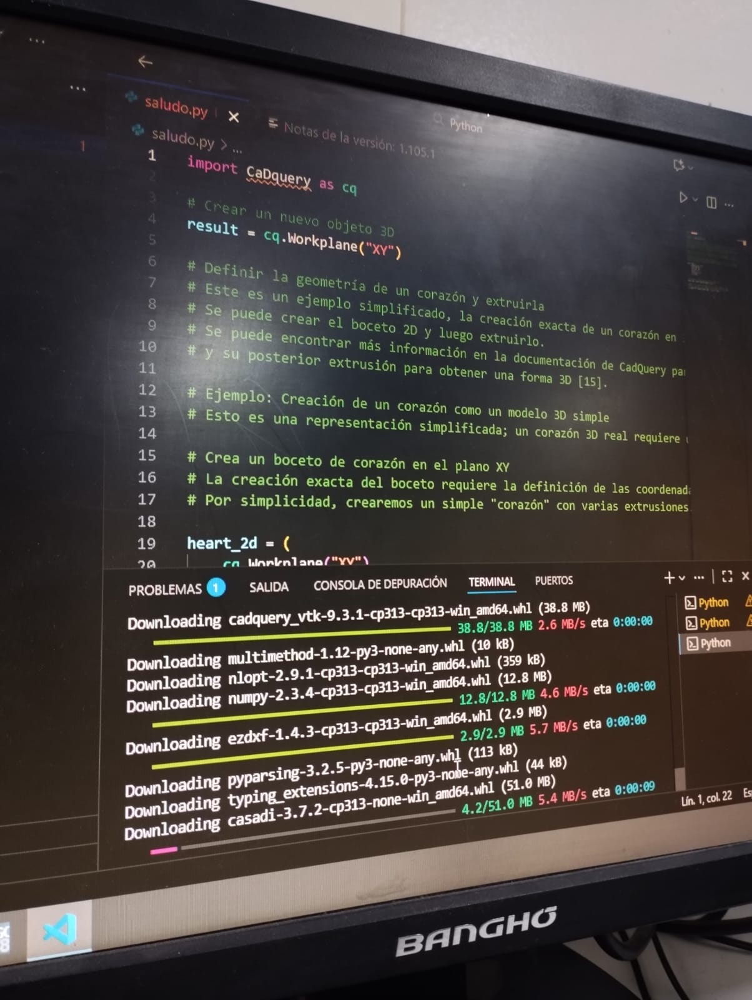
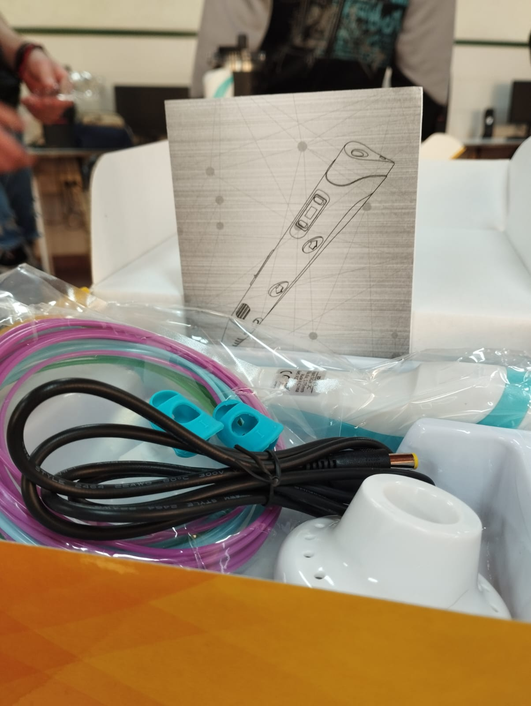
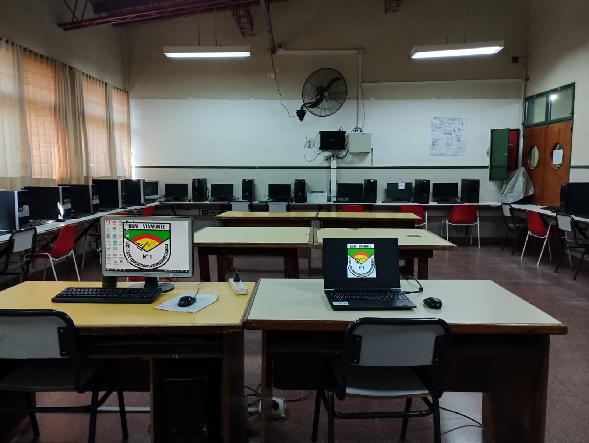

Un centro de estudiantes es una organización formada por los propios alumnos de una institución educativa (generalmente secundaria o universitaria) que busca representar sus intereses, necesidades y propuestas dentro de la comunidad escolar. Es un espacio democrático donde los estudiantes pueden participar, debatir y organizar actividades.
lista de integrantes
-Comisión Directiva
Presidente: Arcal Clemente
Vicepresidente: Tagliani Tomás
Secretaria: Luberriaga Uma
Tesorero: Rodríguez Fausto
-Vocales Titulares:
Pinto Matías
Conde José
Gutierrez Benjamín
Astobiza Francisco
Pianovi Daiana
González Luana
-Vocales Suplentes:
Villarreal Martina
Molina Fermín
Emilia Coña
Santana Marrero Benjamín
Ríos Victoria
Morán Paula
-Concejales Titulares:
Viturro Juan Ignacio
Guastelli Benjamín
-Concejales Suplentes:
Gomila Lutmila
Moreno Samuel



